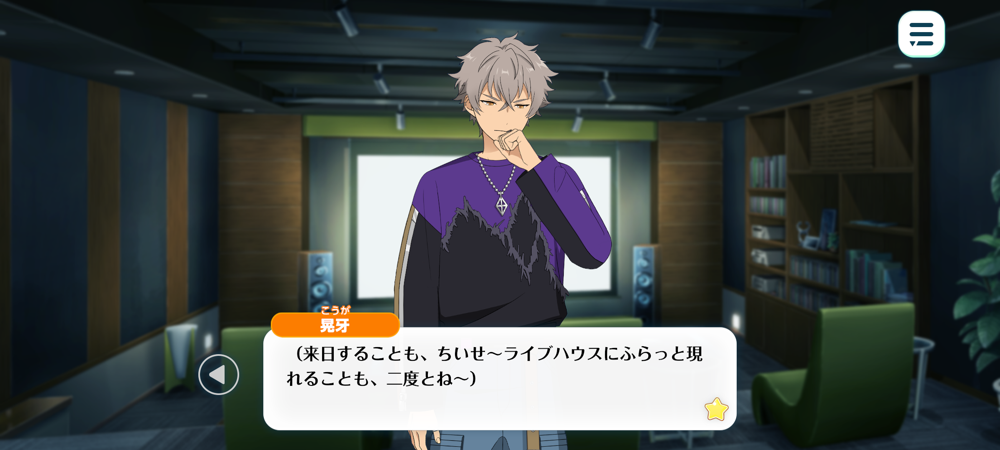
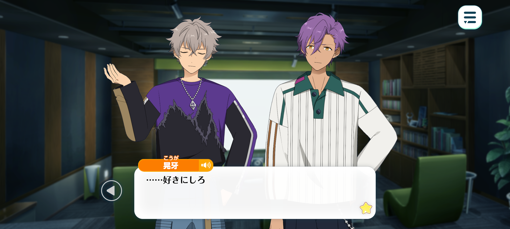
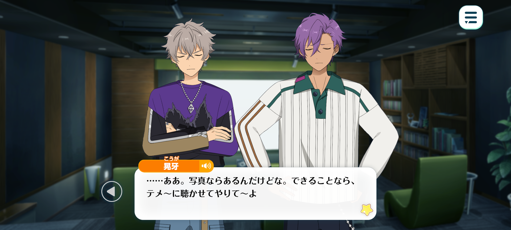
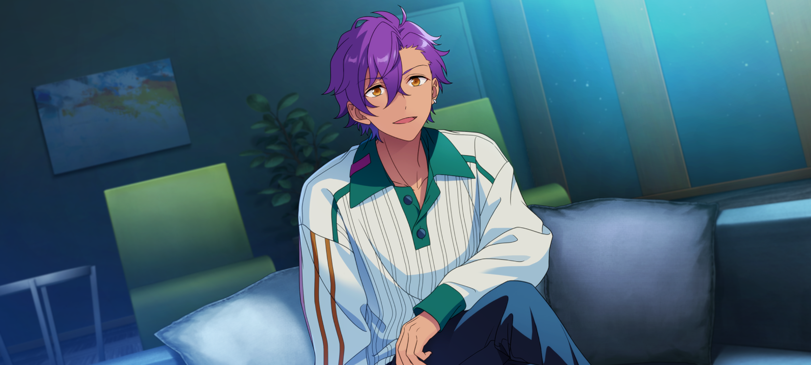
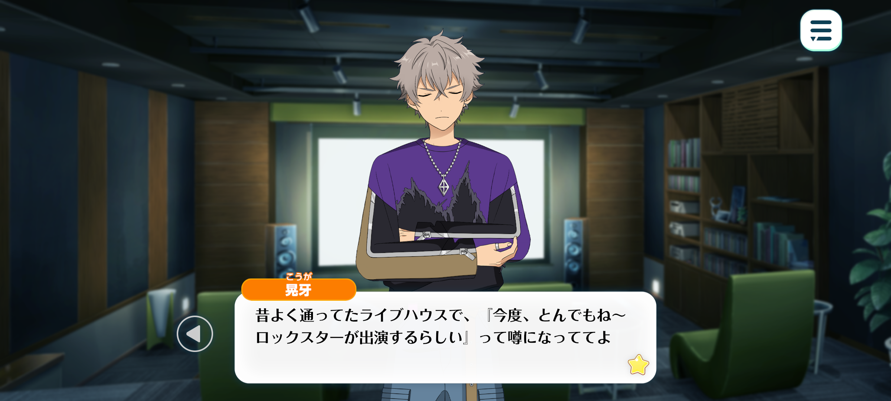
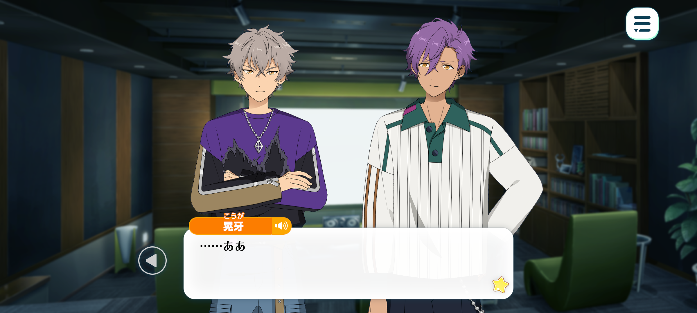

In Memoriam◆Handwriting, Chasing, Rambling
Good-Bye / Chapter 3



Koga: (...I guess he’ll never release another song again.)
(He’ll never jus’ turn up at some random livehouse in Japan.)
(...I understand it now.)
(I mean, I understood it back in the greenroom.)
(Even so… watchin’ these videos almost makes you forget for a moment.)
(Singin’ loud ‘n proud, like he isn’t afraid of a damn thing.)
(It makes sense though. No-one knows when they’re gonna die.)
(Watchin’ this… I can’t help but wish he’s still out there somewhere, singin’. Maybe someday, we’d meet.)
(...But he’s not.)
(He’s gone.)
...

Adonis: ...Oogami.
Koga: ...
Adonis: May I sit next to you?
Koga: …Do whatever you want.
Adonis: Thank you.
…Oogami.
Koga: What.
Adonis: Seeing him on the big screen, he’s even more impressive than I realised.
I’ve been doing some more research.
I watched some of his old live performances. I had no idea he was that famous.
His singing, his stage presence…it was overwhelming. I can really understand why people called him a legend. But…
The MARBLING you knew isn’t the same person these videos show, correct?
I understand that they are the same person, of course, but what I’m trying to say is…
You spoke about “gramps” so joyously.
No matter how much I searched, I could not find any videos from his later years.
It is a deep shame. I was unable to experience even a fraction of the songs that set your soul alight.

Koga: ...Yeah. I’ve got some photos. I really wish I could show you some of his songs.
He was so fuckin’ cool…
…Huh!? Wait a sec.
Adonis: What’s wrong, Oogami?
Koga: I’ve found one…
Adonis: ?
Koga: A video of him. From when I knew him best. Wait a sec, I jus’ gotta…
…Yeah, here.
Adonis: Did you record this?
Koga: Yeah. You weren’t allowed to take videos or anythin’ during his shows, but they let you record during the encore.
As long as you didn’t upload it anywhere.
Adonis: I see. So that is why I could not find anything.
Koga: Probably. There were loads of people recordin’ other than me.
But the fact that nothin’ leaked…
Adonis: Means that everyone respected MARBLING’s rules.
Koga: Of course they did. If you’re a fan, you listen to what MARBLING says.
A live is somethin’ special. It’s somethin’ that happens between the performer and the audience, right there in that moment. It’s not somethin’ you’re supposed to experience through a phone screen.
It’s always pissed me off that people will stand there recordin’ the whole fuckin’ show. They spend the entire time watchin’ their screens instead of the actual performance.
You can’t feel how bone-shakingly loud it was through a video. You can’t feel the crowd goin’ wild around you.
Jus’ put the damn phone away and enjoy it while you’re there.
Adonis: Fufu. That’s a very Oogami opinion.
Although, you’ve taken a video too.
Koga: …Shut it. I’ve only done it once, and I never did it again.
It was durin’ the encore. Everyone else got their phones so I found myself doin’ it too.
But halfway through, I felt like a fuckin’ moron so I stopped. That’s why it’s so short.
Adonis: That doesn’t bother me. Could I see it?
Koga: Yeah… here you go.

Adonis: ...
…He sounds amazing. Completely different from when he was younger.
There’s so much depth to his voice… It's powerful, but warm at the same time. I can’t understand the lyrics, but I can still feel it spreading through my chest.
…I see why you were so enraptured by him.
Koga: Yeah. That depth, it’s jus’. You can’t fake that shit.
But I didn't always feel that way about him.
Adonis: Really?

Koga: Yeah. When I first heard about him, I had no idea who he was.
I’d heard a rumour that some crazy rockstar was gonna play at a livehouse I used to go to all the time.
It’s this tiny place that only the locals really know, so I figured the whole thing was probably bullshit.
But they’d hyped this guy up so much that I wanted t’see who the hell he was. So I went on a whim. Turned up without really knowin’ what t’expect.
Then I saw some foreign guy who was goin’ grey.
I remember thinkin’ “who the fuck’s this guy?”. Honestly, I was pretty disappointed at first.
…But then he played the first note. And everything changed.
It wasn’t because the music was super loud. It wasn’t because he was playin’ the guitar like a fuckin’ maniac.
It was that first strum of his guitar. The second he played it, the atmosphere in the room changed.
It was the kinda livehouse where people usually jus’ stood around with their drinks, half-listenin’ to whoever was on stage.
But that night. It was like a magnet had pulled everyone towards him. One by one, everyone turned to the stage. I’ll never forget how fired up the crowd got.
And that old man didn’t hold back one bit. Not at the start, not at the end. He threw every song at us like it was the last thing he’d ever play.
He didn’t say kon’nichiwa to the Japanese crowd. His accent was so fuckin’ strong I couldn’t understand half of what he was sayin’.
But what I did understand, whether I liked it or not, was that this guy was fuckin’ insane.
I didn’t catch a word he said but his music alone said everything he needed to say.
…On the way home that night, I was obsessively lookin’ him up online. That’s when I found out.
That’s when I realiesd that old man was a fuckin’ legend.
But the first time I saw him, he wasn’t on some big massive stage. He was in this tiny livehouse, playin’ for whoever happened to be there.
And yet…he hadn’t changed one bit.
It didn’t matter how many were in the crowd. Didn’t matter where he was playin’. All that mattered was givin' everything he had to the people standin’ in front of him.
He wasn’t doin’ it so people would love him. Or so they’d call him a legend.
He sang because he wanted to sing. He loved rock, so he played the guitar.
...To me, that man was fuckin’ brilliant. Blindingly brilliant.

Adonis: So that is why you were so drawn to him.
Koga: ...Yeah.
I didn’t really care whether people called him a legend or whatever.
It was the way he lived. He played the music he wanted to play, no matter where he was or what anyone else thought. He jus’ kept doin’ what he loved.
I thought to myself, when I’m his age, I wanna be a rockin’ old man jus’ like him. I really meant it.